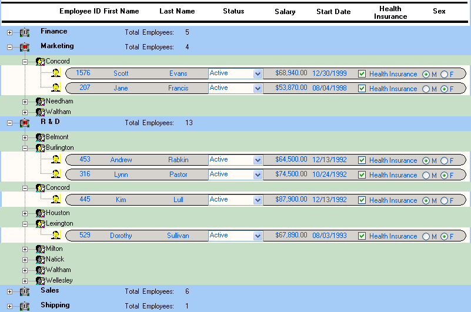

The TreeView presentation style provides an easy way to create DataWindow objects that display hierarchical data in a TreeView, where the rows are divided into groups that can be expanded and collapsed.
The TreeView DataWindow displays a hierarchy of nodes, similar to the way:
In the TreeView DataWindow, each parent node contains other nodes called child nodes. You can display parent nodes—nodes that contain child nodes—in expanded or collapsed form.
With the TreeView DataWindow presentation style, you can group data in a hierarchy that allows users to browse the data and expand nodes to view details. Each TreeView level or node has an icon that users can click to expand or collapse the node.
 No Web DataWindow support Currently you cannot use the TreeView DataWindow presentation
style with the Web DataWindow.
No Web DataWindow support Currently you cannot use the TreeView DataWindow presentation
style with the Web DataWindow.
You use the TreeView DataWindow wizard to create a TreeView DataWindow object. For information, see "Creating a new TreeView DataWindow".
This sample TreeView DataWindow uses the department and employee tables in the EAS Demo DB database and has two TreeView levels. The first level is the department name. The second level is the city where each employee resides. The detail data for each employee is grouped in TreeView leaf nodes under these two levels.

Creating and using a TreeView DataWindow is similar to creating and using a Group DataWindow. However, with the TreeView DataWindow, you can click the state icon to expand and collapse nodes.
The state icon in a TreeView DataWindow is a plus sign (+) when the node is collapsed and a minus sign (-) when the node is expanded. When a node is expanded, connecting lines display by default to show more detail and indicate how the parent data connects with the child data. When a node is collapsed, only the parent data displays; the detail data does not.